Home > 전시관안내 > 야외전시관
야외전시관
arrow_cool_down곤충생태관
무궁무진한 곤충의 세계를 자세히 살펴볼 수 있는 공간이다.
곤충은 전체 동물의 3/4을 차지할 정도로 그 수가 많고 종류가 매우 다양하다.
만약 곤충을 작고 징그러운 벌레로만 생각하는 사람이 있다면
이곳에서 곤충이 얼마나 치열하게 살아가고 있는지 그들만의 세계를 들여다보자.
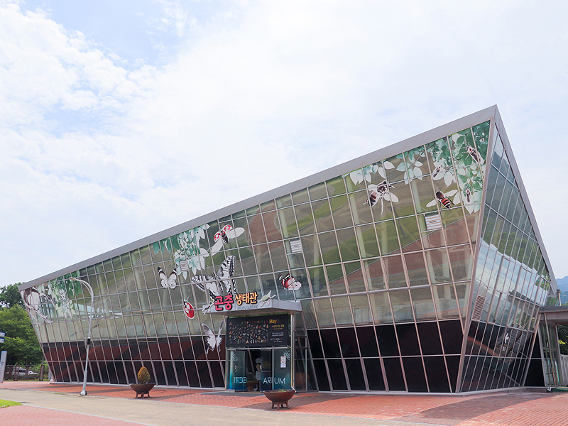
- | 수서곤충과 육상곤충, 인간과 함께 살아가다.
- 수서곤충은 일생의 전부 또는 그 일부를 물에서 생활하는 곤충을, 육상곤충은
땅 위에서 생활하는 곤충을 말한다.
이들은 천적으로부터 몸을 보호하는 등 자신의 생존을 위해 여러 가지로
적응해가는 모습을 보인다.
곤충생태관에서는 곤충이 살아 움직이는 모습을 눈으로 관찰할 수 있으며,
이름과 관련된 여러 가지 특징에 대해 찾아보는 재미도 있다
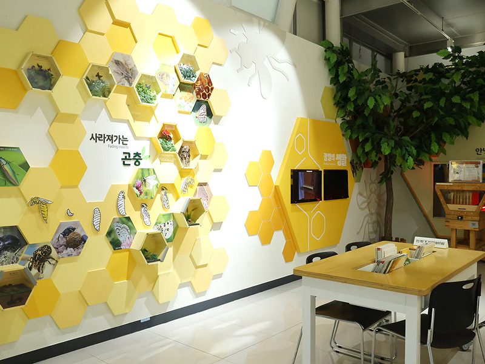
- | 꿀벌, 맛있는 꿀을 전해줘요.
- 귀엽고 친숙한 곤충으로 알려진 꿀벌을 직접 눈으로 확인해 볼 수 있다.
벌에게 쏘일까 봐 두려워 벌집을 멀리서 구경했던 경험이 있다면 이곳에서는
그런 걱정을 할 필요가 없다.
여기서는 벌들이 꿀을 찾아 이동하는 모습과 벌집을 짓는 모습, 또 그들이 지은
벌집을 매우 가까이에서 자세히 관찰할 수 있다.
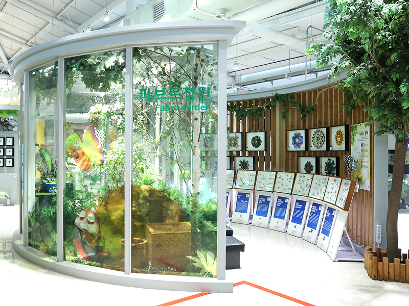
- | 파브르정원, 팔랑팔랑~ 나비를 만날 수 있는 곳
- 따뜻한 날씨가 되면 하늘에 수를 놓은 듯 날아다니는 나비를 사계절
만나볼 수 있다.
파브르정원에는 다양한 나비가 살고 있는데, 그들이 아름답게 날고 있는 모습을
가까이에서 볼 수 있다.
애벌레가 인내의 시간을 겪고 아름다운 나비로 변화하는 과정을 직접 눈으로
관찰함으로써 생명의 소중함과 강인함을 느낄 수 있다.
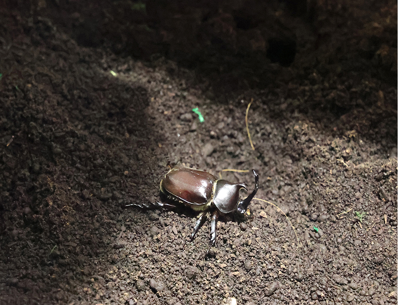
- | 곤충사육실, 사육실 현장의 모습을 감상한다
- 곤충들의 사육과정을 눈으로 확인할 수 있다.
곤충사육실 안에서 곤충들이 어떻게 자라나고 있는지를
유리창 너머로 관찰해보는 것도 하나의 흥밋거리이다.
- emoji_nature곤충특화랩
- 곤충을 관찰하고 다양한 체험을 해볼 수 있는 곤충생태관만의 특별한 교육
- 곤충을 만져보고 관찰하는 과정과 그와 관련된 여러 만들기 체험을 통해
생명의 소중함을 깨닫고 자연을 이해해 보는 체험교육 프로그램이다.
자연생태공원
과학관 전시장 밖 뒤뜰에 있는 도심 속 작은 공원이다.
연못 안에는 물고기들이, 풀밭에는 닭과 오리, 꽃밭에는 알록달록한 꽃들이 우리를 반긴다.
언덕 위와 연못 주위 곳곳에 마련한 쉼터에서는 잠시 마음의 여유를 찾을 수 있다.
- 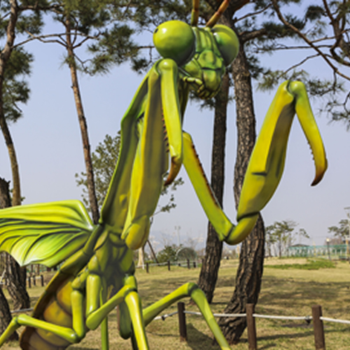
- 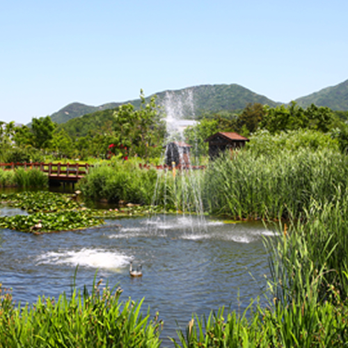
- 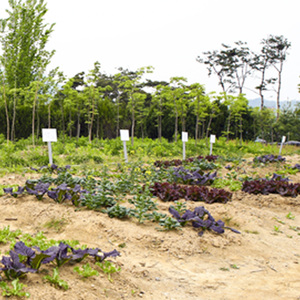
- 1대형곤충모형, 숨은 곤충을 찾아라
-
곤충생태관 옆을 지나면 대형 사마귀 모형이 있어
여기가 생태공원의 입구라는 것을 알려준다.
생태공원 곳곳에는 메뚜기, 무당벌레, 하늘소, 사슴벌레의 대형 모형이 숨어 있다.
산책을 하다 이들을 발견하더라도 놀라지 마시라. - 2생태연못, 다양한 생물들이 모여 사는 곳
-
공원 입구의 출수부에서 나오는 물은 연못으로 이어지는데, 이 안에는 현재 9종의 물고기가 살고 있다.
왜가리, 직박구리, 곤줄박이와 같은 다양한 조류들도 살고 있어 주의를 기울이면 보다 많은 생물들을 발견할 수 있다.
연못에서 관람객들을 향해 뒤뚱거리며 다가오는 오리들은 생태공원의 가장 큰 인기 스타이다. - 3세상을 바꾼 생태학자들, 공원에서 만나는 위인들
-
밤낮으로 생태공원을 지키는 사람들이 있다.
바로 유전학을 수학적으로 표현한 멘델, 진화론을 주창한 다윈과 윌리스가 그 주인공이다.
그들이 왜 생태공원에 서 있는지 그 이야기를 들어보자. - 4생태텃밭, 농사의 소중함을 배우는 곳
-
생태공원의 가장 북쪽에는 생태텃밭과 푸른 향기원이 있어 문명이 만들어낸 인공적인 경작에 대한 것을 설명한다.
농사의 의미와 작물들에 대해 배우고, 도시텃밭을 관찰하며 체험할 수 있다.
5월부터는 텃밭에서 감자와 옥수수, 그리고 이 작물들에 얽힌 이야기를 볼 수 있을 것이다.
공룡공원
중생대의 대표적인 공룡(7종) 모형을 실물 크기로 제작 전시하여 휴식과 학습을 겸할 수 있는 테마파크이다.
공룡알과 공룡 발자국은 공룡이 살아 뛰노는 듯한 생생한 현장감과
아이들의 상상력을 무한히 자극한다.
- 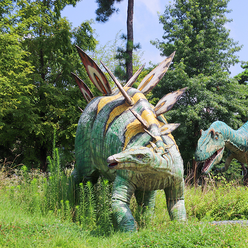
- 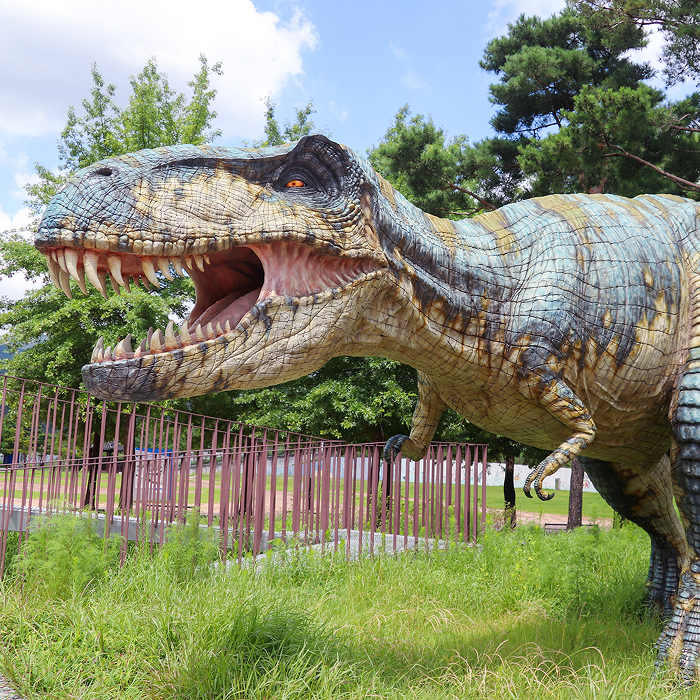
- 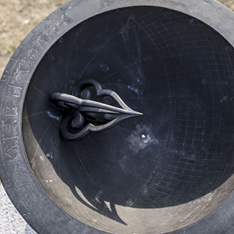
- 1공룡·지질동산, 과거를 만나다
-
공룡동산은 과학관 동쪽 출입문에서 바로 보인다. 중생대의 대표적인 공룡 7종과 공룡알 및 발자국 화석을 실물 모습 그대로 복원해 놓았다.
당시와 유사한 모습으로 숲을 함께 조성하여 휴식과 학습을 겸할 수 있으며,
생생한 현장감과 아이들의 상상력을 자극할 수 있는 공간이다.
지질동산은 공룡동산 옆에 있다. 죽어서 돌이 된 나무, 용암이 만든 아름다운 조형미의 주상절리,
한반도 진화의 역사를 간직한 지층을 통해 지층과 암석의 생성이라는 신비한 지질현상을 탐구할 수 있다. - 2역사광장, 선현의 과학기술을 만나다
-
옥외전시장 중앙에 넓게 자리 잡은 역사광장은 우리나라 고천문학과 과학기술을 살펴볼 수 있는 공간이다.
천문학, 기계기술, 지리학을 포함한 9개 분야가 전시되어 있으며,
특히 규표와 앙부일구를 통해 15세기에 자주적으로 개발한 조선시대의 시간을 확인할 수 있다.
옥외전시장
현장체험학습을 통해 교육효과를 증대시키기 위한 공간이다. 이곳 야외에서 직접 관찰·체험함으로써,실내에서 느낄 수 없는 자연 속 전시환경과 교감할 수 있으며
과학적 원리를 스스로 체험할 수 있다.
- 1
- 2 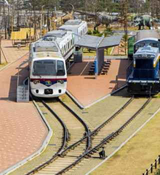
- 3 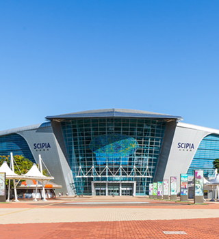
- 4 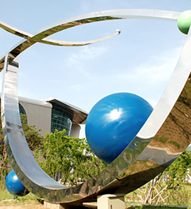
- 5 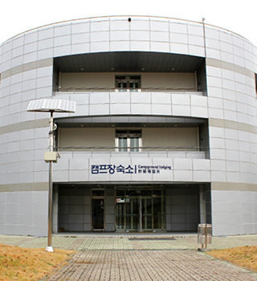
- 6 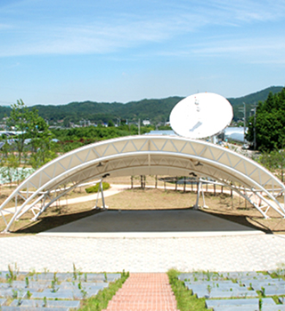
- 1우주 전시, 로켓과 나로호를 만나다
-
무궁화 위성 1호를 쏘아올린 델타로켓의 모형과 우리나라의 첫 우주발사체인 나로호 모형은 과학관 서쪽 출입문에서 바로 보이는 곳에 위치해 있다.
실제 크기로 설치되어 있어 우주탐사에 대한 실감나는 현장 체험과 우리나라의 노력과 결실을 알아보며 체험할 수 있다. - 2교통 전시, 철로 위 기차를 만나다
-
교통 전시장은 상설전시관 후문에 위치해 있는 코너이다.
산업기술의 발달과정을 보여주는 육상 운송수단인 기차와 철로가 실물로 설치되어 있으며,
포토존과 체험학습공간으로 사용할 수 있다. - 3과학문화광장에서 다양한 문화활동을 만나다
- 국립과천과학관은 과학광장 및 과학문화광장, 과학조각공원 등 다양한 문화행사를 개최할 수 있는 야외활동 공간을 확보하고 있습니다.
- 4과학조각공원에서 과학과 자연의 조화를 느끼다
- 국립과천과학관은 과학광장 및 과학문화광장, 과학조각공원 등 다양한 문화행사를 개최할 수 있는 야외활동 공간을 확보하고 있습니다.
- 5과학캠프장 캠프를 통해 과학을 배우다.
- 국립과천과학관은 천체관측소와 함께 학생들의 다양한 활동을 지원할 수 있는 과학캠프장을 운영하고 있습니다. (캠프장 숙소 운영)
- 6노천극장에서 과학과 관련된 공연을 만나다.
-
국립과천과학관은 자연 속에서 다양한 문화행사 및 공연을 개최할 수 있는 노천극장을 운영하고 있습니다.
*수용인원: 약 520명 / 무대: 면적 93.6M, 지붕설치 / 객석: 면적 527M, 스탠드 설치